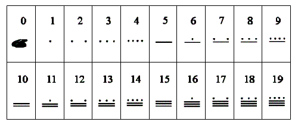
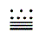
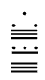

|
|||||||||||||||||
|
Server time: 2006-01-10 05:48:07 |
SPOJ Problem Set94. Numeral System of the MayaProblem code: MAYA
The Maya lived in Central America during the first millennium. In many regards, they consituted one of the most developed and most fascinating cultures of this epoch. Even though draught animals and the wheel were unknown to the Mayas, they excelled in the fields of weaving, architecture and pottery. But truely breath-taking were their achievements in the fields of astronomy and mathematics. Whilst Europe was trudging through the dark Middle Ages, the Maya determined the solar year to 365.242 days (modern-day measurement: 365.242198) and the lunar cycle to 29.5302 days (modern-day measurement: 29.53059). Such astonishingly precise findings were hardly possible without a powerful numeral system. In this task we will explore the Maya's numeral system. Maya priests and astronomers used a numerical system to the base of 20. Unusual to their time, their system also included the concepts of digits and of the zero. Both concepts were completely unknown to the Europeans at this time. The first nineteen numbers of the vigesimal system were represented by dots and dashes according to the following table:  The zero was written down as a symbol resembling a shell. Multi-digit numbers (i.e. the numbers bigger than 19) were written in vertical arrangement, with the highest-value digit on top. For example, the number 79 was written as  As can be seen, the second digit possesses a value of 20. Due to an interference of the two calendar systems of the Maya, the third digit did not hold the value 400 (20x20), as would be expected, but 360. All the following digits were again treated regularly, i.e. the fourth digit counted 7200 (360x20), the fifth 144000 (7200x20), and so on. Hence, the number 13495 (=1x7200+17x360+8x20+15) was written as follows:  Write a program to convert Maya numbers to decimal numbers! InputThe input file contains a list of numbers written down in Maya fashion. Of course, dots are represented as points (.), and dashes are represented as hyphens (-). The zero digit, the shell symbol, is written as a capital letter S (S). Description of a Maya number starts with n - the number of the Maya digits. The following n lines contain one digit each. One digit is written from top to bottom using spaces as vertical separators. One number will not have more than seven digits. Each two numbers are separated by a blank line. Input terminates with n = 0 OutputYour program has to output the value of the number in the input file in the nowadays more common decimal system. One number per line. ExampleSample input: 1 .. 5 ... - . - - S S S 0 Sample output: 2 1231200
|
||||||||||||||||
| |||||||||||||||||